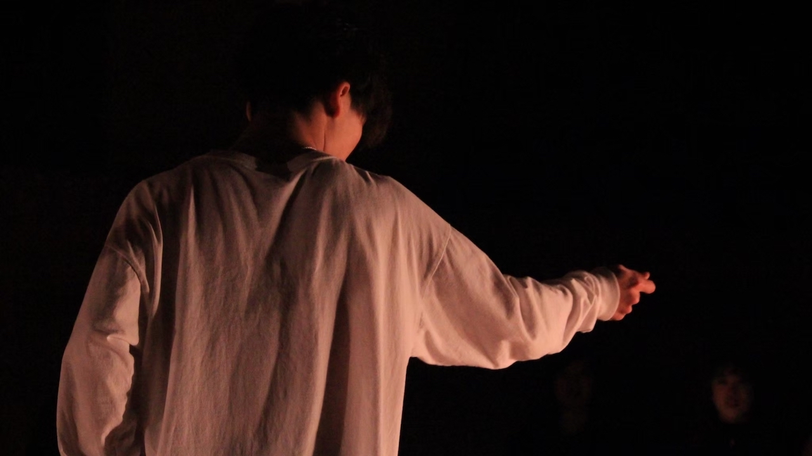
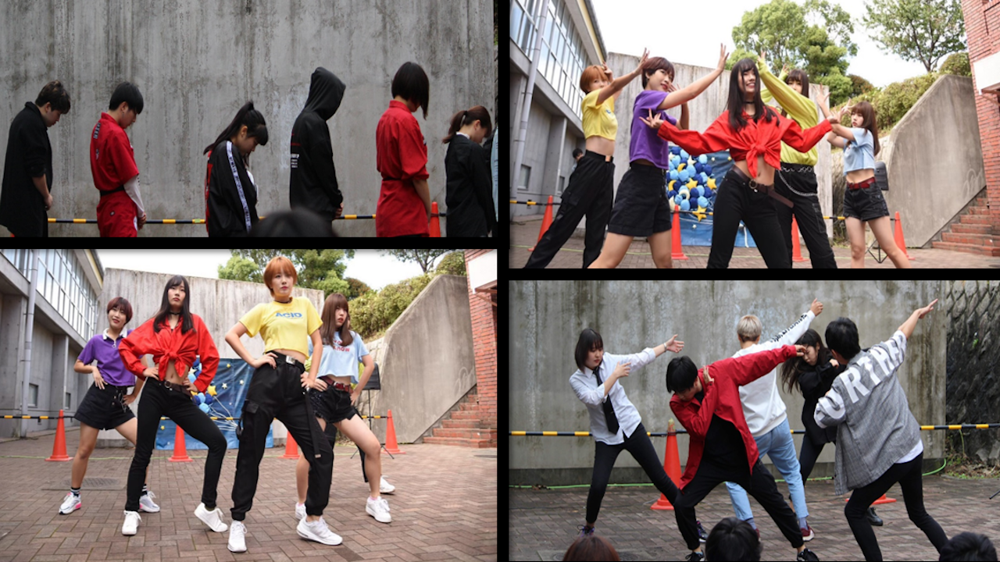

HIP-HOP

HIP-HOPとは
文化祭では振付を発表する機会があり、全員で練習しています！
I-DOL

IDOLとは
初心者の方でも簡単に踊れて、ライブではとても盛り上がります！
普段では着ないかわいい衣装にも注目です！
POP

POPとは
ロボットやカクカクした動きが好きな人におすすめです！
KRUMP

KRUMPとは
ストンプ（足を踏み鳴らす）・チェストポップ（胸を突き出す）・アームスイング（腕を振り下ろす）
の3つの動きがベースとなり、自分の中に秘めている感情を爆発させるアグレッシブなジャンルとなっています
また、バトルやお互いを高め合うセッションがメインとされ、仲間との高め合いを大切にしています
当同好会では基礎の練習を通じての発表はもちろんのこと、クランプの本質でもあるバトルやセッションも
有志にて行っていますので初心者から経験者まで幅広くクランプを楽しめると思います！
K-POP

K-POPとは
表現の難しい振付が多いですが、すごいと思っていただけるように頑張ります！
VOCALOID

VOCALOIDとは
ほとんどがボーカロイドの踊ってみたのカバーになるので踊ってみたが好きな人はぜひ体験に来てください